Chapter 2. Programming Probabilistically#
import os
import warnings
import arviz as az
import matplotlib.pyplot as plt
import pandas as pd
import jax.numpy as jnp
from jax import random
import numpyro
import numpyro.distributions as dist
import numpyro.optim as optim
from numpyro.infer import MCMC, NUTS, Predictive
from numpyro.diagnostics import print_summary
from numpyro.infer import SVI, Trace_ELBO
from numpyro.infer.autoguide import AutoLaplaceApproximation
seed=4321
if "SVG" in os.environ:
%config InlineBackend.figure_formats = ["svg"]
warnings.formatwarning = lambda message, category, *args, **kwargs: "{}: {}\n".format(
category.__name__, message
)
az.style.use("arviz-darkgrid")
numpyro.set_platform("cpu") # or "gpu", "tpu" depending on system
/home/runner/work/bap-numpyro/bap-numpyro/.venv/lib/python3.13/site-packages/tqdm/auto.py:21: TqdmWarning: IProgress not found. Please update jupyter and ipywidgets. See https://ipywidgets.readthedocs.io/en/stable/user_install.html
from .autonotebook import tqdm as notebook_tqdm
numpyro primer#
trials = 4
theta_real = 0.35 # unknown value in a real experiment
# data = stats.bernoulli.rvs(p=theta_real, size=trials)
data = dist.Bernoulli(probs=theta_real).sample(random.PRNGKey(1), (trials,))
data
Array([0, 0, 0, 0], dtype=int32)
def model(data):
# a priori
θ = numpyro.sample('θ', dist.Beta(1., 1.))
# likelihood
numpyro.sample('y', dist.Bernoulli(probs=θ), obs=data)
kernel = NUTS(model)
mcmc = MCMC(kernel, num_warmup=500, num_samples=1500, num_chains=2)
mcmc.run(random.PRNGKey(1), data=data)
UserWarning: There are not enough devices to run parallel chains: expected 2 but got 1. Chains will be drawn sequentially. If you are running MCMC in CPU, consider using `numpyro.set_host_device_count(2)` at the beginning of your program. You can double-check how many devices are available in your system using `jax.local_device_count()`.
Summarizing the posterior#
az.plot_trace(az.from_numpyro(mcmc), compact=False)
plt.show()
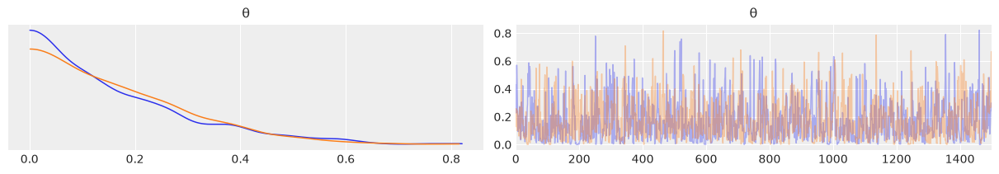
mcmc.print_summary()
mean std median 5.0% 95.0% n_eff r_hat
θ 0.17 0.14 0.14 0.00 0.38 1032.25 1.00
Number of divergences: 0
Posterior-based decisions#
az.plot_posterior(az.from_numpyro(mcmc))
plt.show()
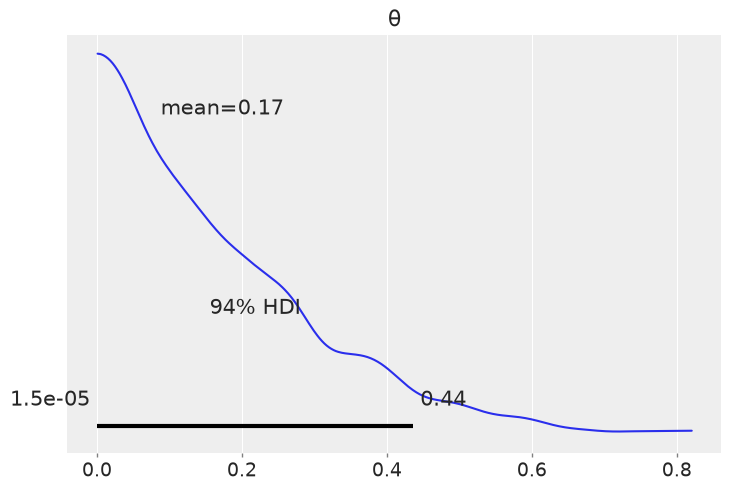
az.plot_posterior(az.from_numpyro(mcmc), rope=[0.45, .55])
<Axes: title={'center': 'θ'}>
findfont: Failed to find font weight semibold, now using 700.
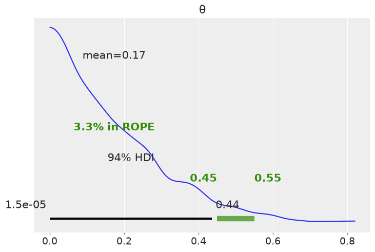
az.plot_posterior(az.from_numpyro(mcmc), ref_val=0.5)
<Axes: title={'center': 'θ'}>
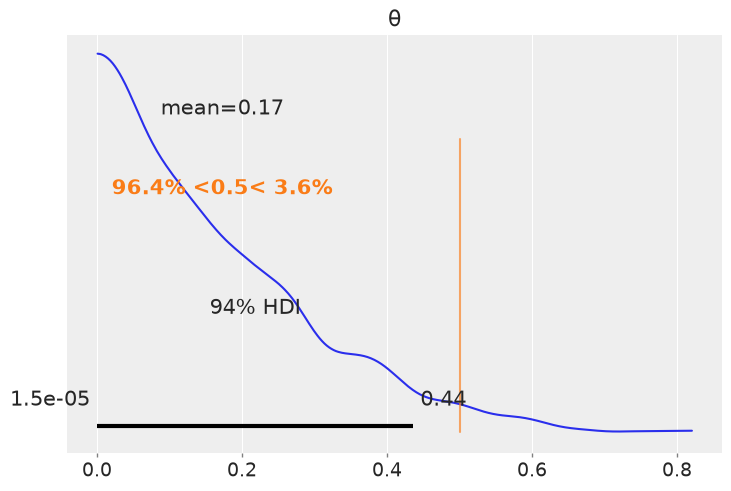
mcmc.get_samples(group_by_chain=True)
{'θ': Array([[0.4302732 , 0.22730798, 0.35363612, ..., 0.2424667 , 0.2424667 ,
0.29889515],
[0.12797502, 0.2579594 , 0.24877162, ..., 0.2667495 , 0.39053956,
0.66751534]], dtype=float32)}
grid = jnp.linspace(start=0, stop=1, num=200)
θ_pos = mcmc.get_samples()["θ"]
lossf_a = [jnp.mean(abs(i - θ_pos)) for i in grid]
lossf_b = [jnp.mean((i - θ_pos)**2) for i in grid]
for lossf, c in zip([lossf_a, lossf_b], ['C0', 'C1']):
mini = jnp.argmin(jnp.asarray(lossf))
plt.plot(grid, lossf, c)
plt.plot(grid[mini], lossf[mini], 'o', color=c)
plt.annotate('{:.2f}'.format(grid[mini]),
(grid[mini], lossf[mini] + 0.03), color=c)
plt.yticks([])
plt.xlabel(r'$\hat \theta$')
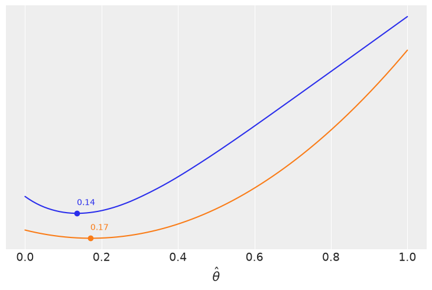
jnp.mean(θ_pos), jnp.median(θ_pos)
(Array(0.17276159, dtype=float32), Array(0.13712831, dtype=float32))
lossf = []
for i in grid:
if i < 0.5:
f = jnp.mean(jnp.pi * θ_pos / jnp.abs(i - θ_pos))
else:
f = jnp.mean(1 / (i - θ_pos))
lossf.append(f)
mini = jnp.argmin(jnp.asarray(lossf))
plt.plot(grid, lossf)
plt.plot(grid[mini], lossf[mini], 'o')
plt.annotate('{:.2f}'.format(grid[mini]),
(grid[mini] + 0.01, lossf[mini] + 0.1))
plt.yticks([])
plt.xlabel(r'$\hat \theta$')
Text(0.5, 0, '$\\hat \\theta$')
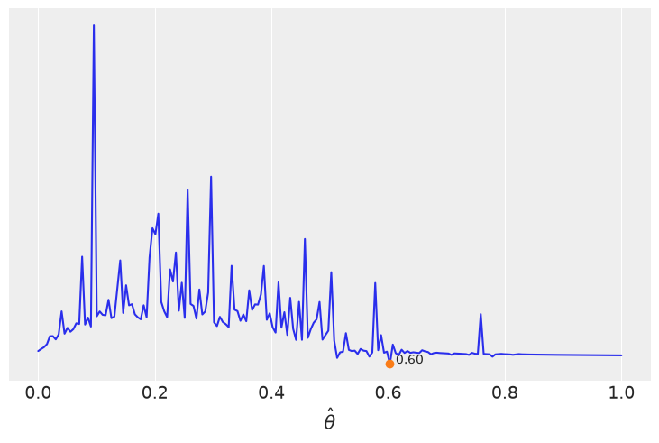
Gaussian inferences#
data = pd.read_csv('../data/chemical_shifts.csv', header=None)
data.head()
| 0 | |
|---|---|
| 0 | 51.06 |
| 1 | 55.12 |
| 2 | 53.73 |
| 3 | 50.24 |
| 4 | 52.05 |
data = jnp.asarray(data)
data.shape
(48, 1)
az.plot_kde(data, rug=True)
plt.yticks([0], alpha=0)
([<matplotlib.axis.YTick at 0x7f769c332fd0>], [Text(0, 0, '0')])
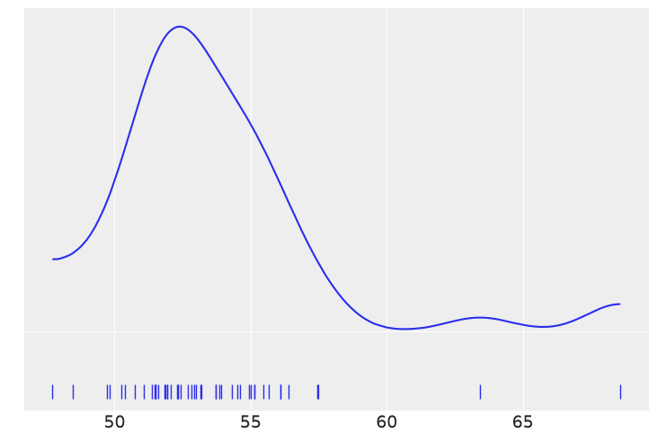
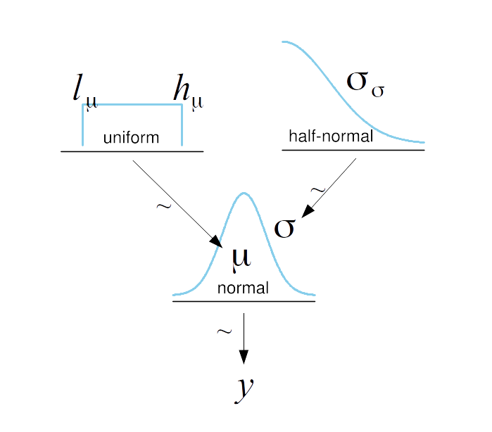
def model(obs=None):
μ = numpyro.sample('μ', dist.Uniform(low=40., high=70.))
σ = numpyro.sample('σ', dist.HalfNormal(scale=10.))
y = numpyro.sample('y', dist.Normal(loc=μ, scale=σ), obs=obs)
kernel = NUTS(model)
mcmc2 = MCMC(kernel, num_warmup=500, num_samples=1000, num_chains=2)
mcmc2.run(random.PRNGKey(seed), obs=data)
UserWarning: There are not enough devices to run parallel chains: expected 2 but got 1. Chains will be drawn sequentially. If you are running MCMC in CPU, consider using `numpyro.set_host_device_count(2)` at the beginning of your program. You can double-check how many devices are available in your system using `jax.local_device_count()`.
def model(obs=None):
μ = numpyro.sample('μ', dist.Uniform(low=40., high=70.))
σ = numpyro.sample('σ', dist.HalfNormal(scale=10.))
y = numpyro.sample('y', dist.Normal(loc=μ, scale=σ), obs=obs)
guide = AutoLaplaceApproximation(model)
svi = SVI(model, guide, optim=optim.Adam(1), loss=Trace_ELBO(), obs=data)
svi_result = svi.run(random.PRNGKey(seed), num_steps=2000)
svi_result.params
0%| | 0/2000 [00:00<?, ?it/s]
0%| | 1/2000 [00:00<07:50, 4.25it/s]
34%|███▍ | 677/2000 [00:00<00:00, 2554.13it/s, init loss: 1089.1637, avg. loss [501-600]: 129.8815]
68%|██████▊ | 1366/2000 [00:00<00:00, 4072.73it/s, init loss: 1089.1637, avg. loss [1201-1300]: 129.8815]
100%|██████████| 2000/2000 [00:00<00:00, 3790.34it/s, init loss: 1089.1637, avg. loss [1901-2000]: 129.8815]
{'auto_loc': Array([-0.20069703, 1.2389036 ], dtype=float32)}
samples = guide.sample_posterior(random.PRNGKey(1), svi_result.params, sample_shape=(1000,))
print_summary(samples, 0.89, False)
mean std median 5.5% 94.5% n_eff r_hat
μ 53.50 0.50 53.51 52.73 54.29 792.82 1.00
σ 3.45 0.36 3.44 2.92 4.02 1015.33 1.00
az.summary(samples)
arviz - WARNING - Shape validation failed: input_shape: (1, 1000), minimum_shape: (chains=2, draws=4)
| mean | sd | hdi_3% | hdi_97% | mcse_mean | mcse_sd | ess_bulk | ess_tail | r_hat | |
|---|---|---|---|---|---|---|---|---|---|
| μ | 53.503 | 0.495 | 52.527 | 54.394 | 0.017 | 0.012 | 807.0 | 894.0 | NaN |
| σ | 3.452 | 0.356 | 2.814 | 4.105 | 0.011 | 0.008 | 1009.0 | 947.0 | NaN |
idata_svi = az.from_dict(posterior={k: v[None, ...] for k, v in samples.items()})
az.plot_pair(idata_svi, var_names=['μ', 'σ'], kind='kde', marginals=True)
array([[<Axes: >, None],
[<Axes: xlabel='μ', ylabel='σ'>, <Axes: >]], dtype=object)
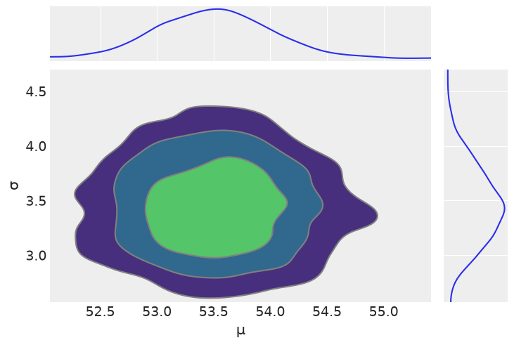
az.plot_trace(az.from_numpyro(mcmc2), compact=False)
plt.show()
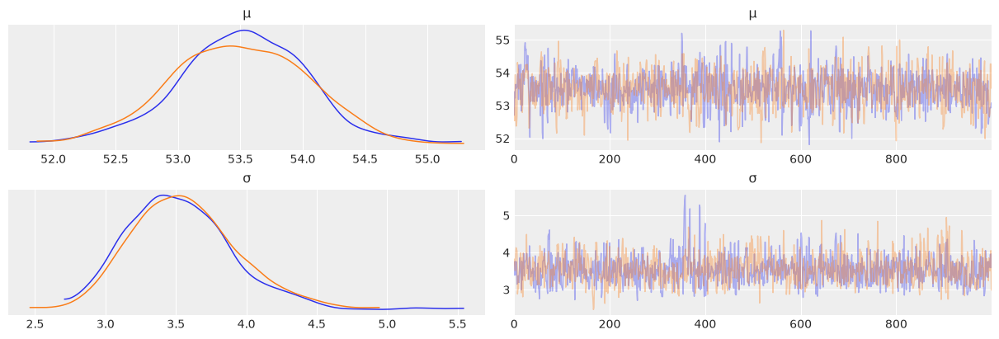
az.plot_pair(az.from_numpyro(mcmc2), var_names=['μ', 'σ'], kind='kde', marginals=True)
array([[<Axes: >, None],
[<Axes: xlabel='μ', ylabel='σ'>, <Axes: >]], dtype=object)
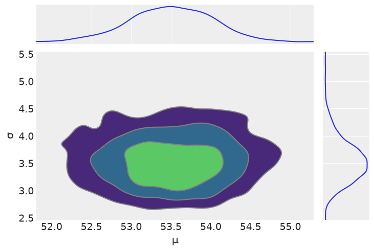
mcmc2.print_summary()
mean std median 5.0% 95.0% n_eff r_hat
μ 53.50 0.54 53.51 52.58 54.35 1363.21 1.00
σ 3.55 0.38 3.52 2.89 4.09 1087.79 1.00
Number of divergences: 0
az.summary(mcmc2)
| mean | sd | hdi_3% | hdi_97% | mcse_mean | mcse_sd | ess_bulk | ess_tail | r_hat | |
|---|---|---|---|---|---|---|---|---|---|
| μ | 53.501 | 0.537 | 52.456 | 54.494 | 0.015 | 0.014 | 1381.0 | 1106.0 | 1.0 |
| σ | 3.546 | 0.380 | 2.893 | 4.277 | 0.011 | 0.012 | 1261.0 | 1126.0 | 1.0 |
prior = Predictive(mcmc2.sampler.model, num_samples=10)
prior_p = prior(random.PRNGKey(seed), obs=data)
pred = Predictive(model=mcmc2.sampler.model, posterior_samples=mcmc2.get_samples(), return_sites=['y'])
post_p = pred(random.PRNGKey(seed))
# post_p['y'] = post_p['y'].squeeze()
# post_p['y'] = jnp.expand_dims(post_p['y'], axis=1) --> Seems line not needed
post_p['y'].shape
(2000,)
post_p['y'] = post_p['y'][:50]
post_p['y'].shape
(50,)
jnp.sort(post_p['y'])
Array([46.745388, 47.783894, 47.960545, 48.143864, 48.682137, 49.091415,
49.43399 , 50.61955 , 50.651875, 50.870014, 50.940655, 51.011593,
51.060616, 51.445423, 51.500843, 51.507828, 51.628143, 51.72838 ,
52.139427, 52.14141 , 52.777943, 52.882385, 53.023865, 53.283226,
53.357082, 53.459694, 54.149002, 54.518143, 54.66415 , 54.853065,
55.205856, 55.271294, 55.291107, 55.31206 , 55.541275, 55.729 ,
56.294544, 56.300568, 56.3838 , 57.02212 , 57.11992 , 57.69125 ,
57.98786 , 58.0567 , 58.087234, 58.136707, 58.233673, 58.76705 ,
60.163494, 62.707558], dtype=float32)
# samples = az.from_numpyro(mcmc2, prior=prior_p, posterior_predictive=post_p)
samples = az.from_numpyro(mcmc2, prior=prior_p, posterior_predictive=post_p) # Priop p seems not required.
# az.summary(samples)
posterior predictive shape not compatible with number of chains and draws. This can mean that some draws or even whole chains are not represented.
samples.groups()
['posterior',
'posterior_predictive',
'log_likelihood',
'sample_stats',
'prior',
'prior_predictive',
'observed_data']
fig, ax = plt.subplots()
az.plot_kde(post_p['y'], ax=ax, plot_kwargs={'alpha': 0.5})
<Axes: >
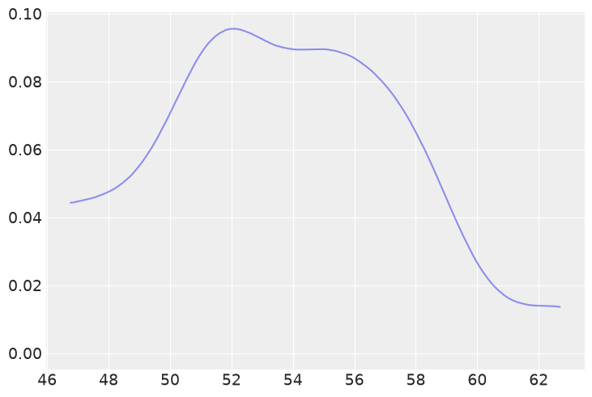
az.plot_ppc(samples, mean=True, observed=True)
plt.xlim(40, 70)
UserWarning: Your data appears to have a single value or no finite values
(40.0, 70.0)
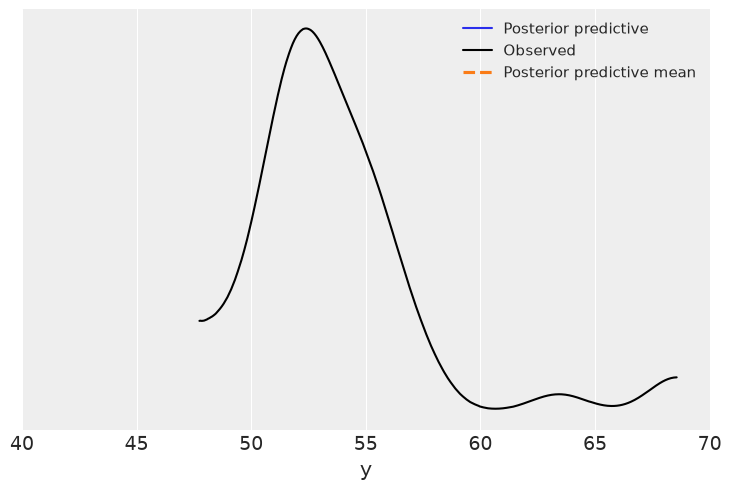
Robust inferences#
plt.figure(figsize=(10, 6))
x_values = jnp.linspace(start=-10, stop=10, num=500)
for df in [1, 2, 30]:
distri = dist.StudentT(df)
x_pdf = jnp.exp(distri.log_prob(x_values))
plt.plot(x_values, x_pdf, label=fr'$\nu = {df}$', lw=3)
x_pdf = jnp.exp(dist.Normal().log_prob(x_values))
plt.plot(x_values, x_pdf, 'k--', label=r'$\nu = \infty$')
plt.xlabel('x')
plt.yticks([])
plt.legend()
plt.xlim(-5, 5)
(-5.0, 5.0)
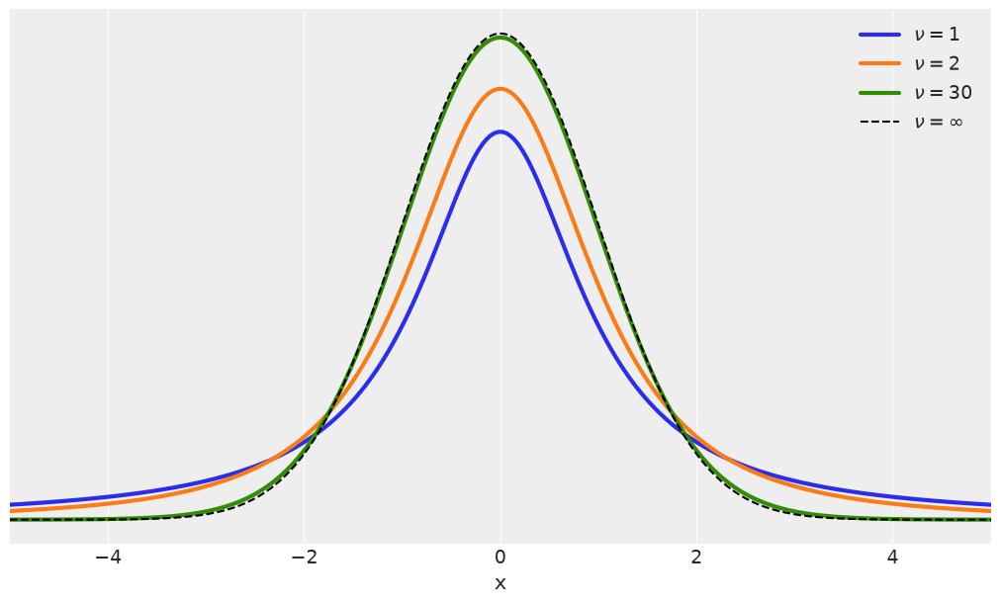
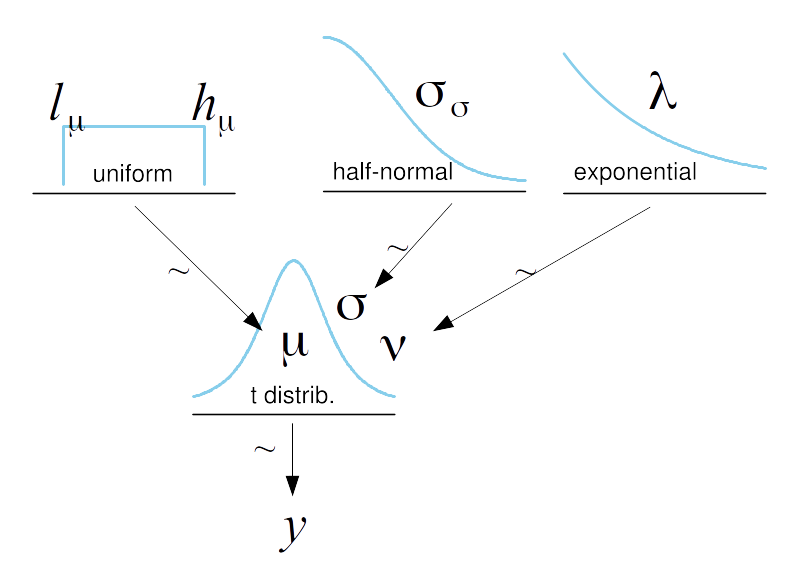
def model(obs=None):
μ = numpyro.sample('μ', dist.Uniform(low=40., high=75.))
σ = numpyro.sample('σ', dist.HalfNormal(scale=10.))
ν = numpyro.sample('ν', dist.Exponential(rate=1/30))
y = numpyro.sample('y', dist.StudentT(ν, loc=μ, scale=σ), obs=obs)
kernel = NUTS(model)
mcmc3 = MCMC(kernel, num_warmup=500, num_samples=500, num_chains=2)
mcmc3.run(random.PRNGKey(seed), obs=data)
UserWarning: There are not enough devices to run parallel chains: expected 2 but got 1. Chains will be drawn sequentially. If you are running MCMC in CPU, consider using `numpyro.set_host_device_count(2)` at the beginning of your program. You can double-check how many devices are available in your system using `jax.local_device_count()`.
az.plot_trace(az.from_numpyro(mcmc3), compact=False)
plt.show()
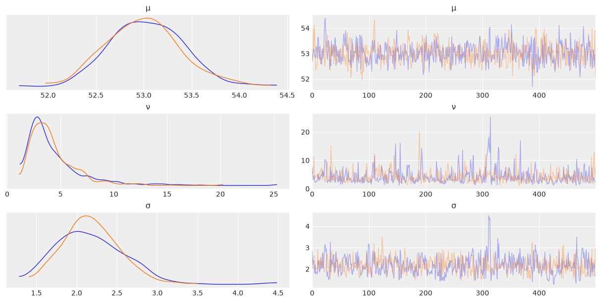
az.summary(mcmc3)
| mean | sd | hdi_3% | hdi_97% | mcse_mean | mcse_sd | ess_bulk | ess_tail | r_hat | |
|---|---|---|---|---|---|---|---|---|---|
| μ | 53.015 | 0.385 | 52.314 | 53.713 | 0.015 | 0.012 | 685.0 | 634.0 | 1.00 |
| ν | 4.324 | 2.554 | 1.114 | 8.752 | 0.128 | 0.232 | 522.0 | 391.0 | 1.00 |
| σ | 2.179 | 0.395 | 1.500 | 2.860 | 0.017 | 0.025 | 504.0 | 396.0 | 1.02 |
prior = Predictive(mcmc3.sampler.model, num_samples=10)
prior_p = prior(random.PRNGKey(seed), obs=data)
pred = Predictive(model=mcmc3.sampler.model, posterior_samples=mcmc3.get_samples(), return_sites=['y'])
post_p = pred(random.PRNGKey(seed))
post_p['y'] = post_p['y'][:100]
samples = az.from_numpyro(mcmc3, prior=prior_p, posterior_predictive=post_p) ## CHECK THIS
posterior predictive shape not compatible with number of chains and draws. This can mean that some draws or even whole chains are not represented.
az.plot_ppc(samples, mean=True, observed=True, color='C0')
plt.xlim(40, 70)
FutureWarning: color has been deprecated in favor of colors
UserWarning: Your data appears to have a single value or no finite values
(40.0, 70.0)
Tips example#
tips = pd.read_csv('../data/tips.csv')
tips.tail()
| total_bill | tip | sex | smoker | day | time | size | |
|---|---|---|---|---|---|---|---|
| 239 | 29.03 | 5.92 | Male | No | Sat | Dinner | 3 |
| 240 | 27.18 | 2.00 | Female | Yes | Sat | Dinner | 2 |
| 241 | 22.67 | 2.00 | Male | Yes | Sat | Dinner | 2 |
| 242 | 17.82 | 1.75 | Male | No | Sat | Dinner | 2 |
| 243 | 18.78 | 3.00 | Female | No | Thur | Dinner | 2 |
import seaborn as sns
sns.violinplot(x='day', y='tip', data=tips)
<Axes: xlabel='day', ylabel='tip'>
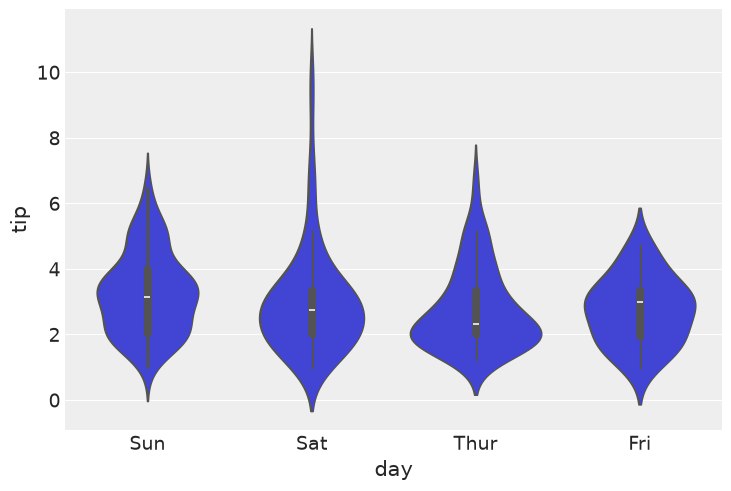
tip = tips['tip'].values
idx = pd.Categorical(tips['day'],
categories=['Thur', 'Fri', 'Sat', 'Sun']).codes
groups = len(jnp.unique(idx))
def model(N=len(idx), obs=None):
μ = numpyro.sample('μ', dist.Normal(loc=0., scale=10.), sample_shape=(groups,))
σ = numpyro.sample('σ', dist.HalfNormal(scale=10.), sample_shape=(groups,))
with numpyro.plate("N", N):
numpyro.sample('y', dist.Normal(loc=μ[idx], scale=σ[idx]), obs=obs)
kernel = NUTS(model)
mcmc4 = MCMC(kernel, num_warmup=1000, num_samples=4000, num_chains=2)
mcmc4.run(random.PRNGKey(seed), obs=tip)
UserWarning: There are not enough devices to run parallel chains: expected 2 but got 1. Chains will be drawn sequentially. If you are running MCMC in CPU, consider using `numpyro.set_host_device_count(2)` at the beginning of your program. You can double-check how many devices are available in your system using `jax.local_device_count()`.
az.plot_trace(az.from_numpyro(mcmc4), compact=False)
plt.show()
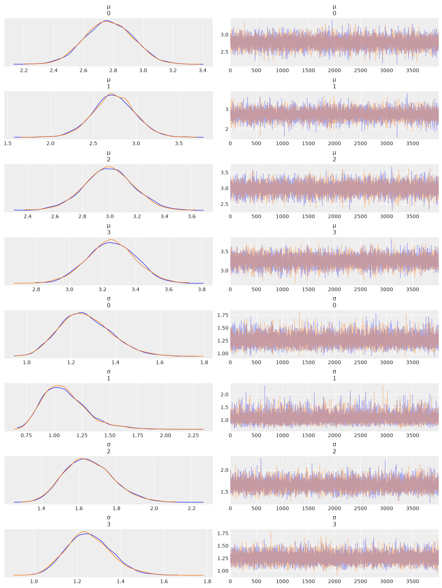
distri = dist.Normal()
_, ax = plt.subplots(3, 2, figsize=(14, 8), constrained_layout=True)
comparisons = [(i, j) for i in range(4) for j in range(i+1, 4)]
pos = [(k, l) for k in range(3) for l in (0, 1)]
for (i, j), (k, l) in zip(comparisons, pos):
means_diff = mcmc4.get_samples()['μ'][:, i] - mcmc4.get_samples()['μ'][:, j]
d_cohen = (means_diff / jnp.sqrt((mcmc4.get_samples()['σ'][:, i]**2 + mcmc4.get_samples()['σ'][:, j]**2) / 2)).mean()
ps = distri.cdf(d_cohen/(2**0.5))
# import pdb;pdb.set_trace()
means_diff = jnp.asarray(means_diff)
az.plot_posterior(means_diff.copy(), ref_val=0, ax=ax[k, l])
ax[k, l].set_title(f'$\mu_{i}-\mu_{j}$')
ax[k, l].plot(
0, label=f"Cohen's d = {d_cohen:.2f}\nProb sup = {ps:.2f}", alpha=0)
ax[k, l].legend()
SyntaxWarning: invalid escape sequence '\m'
SyntaxWarning: invalid escape sequence '\m'
SyntaxWarning: invalid escape sequence '\m'
SyntaxWarning: invalid escape sequence '\m'
SyntaxWarning: invalid escape sequence '\m'
SyntaxWarning: invalid escape sequence '\m'
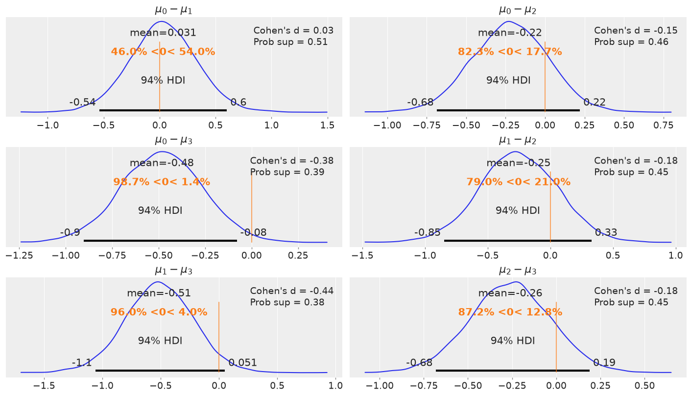
Hierarchical Models#
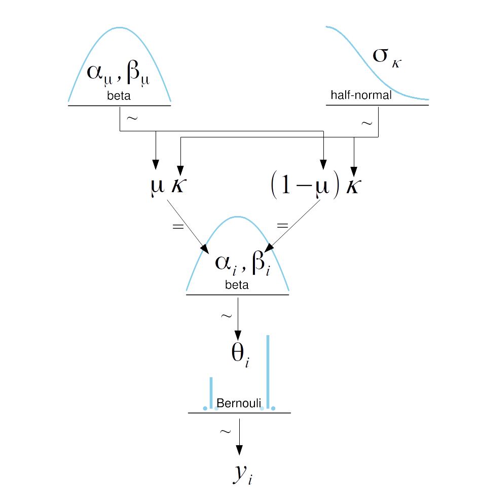
N_samples = [30, 30, 30]
G_samples = [18, 18, 18] # [3, 3, 3] [18, 3, 3]
N_samples[0]
30
group_idx = jnp.repeat(jnp.arange(len(N_samples)), N_samples[0])
data = []
for i in range(0, len(N_samples)):
data.extend(jnp.repeat(jnp.asarray([1, 0]), jnp.asarray([G_samples[i], N_samples[i]-G_samples[i]])))
data = jnp.asarray(data)
def model(obs=None):
μ = numpyro.sample('μ', dist.Beta(1.,1.))
κ = numpyro.sample('κ', dist.HalfNormal(scale=10.))
θ = numpyro.sample('θ', dist.Beta(μ*κ, (1.0-μ)*κ), sample_shape=(len(N_samples),))
# with numpyro.plate("N", N):
numpyro.sample('y', dist.Bernoulli(probs=θ[group_idx]), obs=obs, sample_shape=(len(N_samples),))
kernel = NUTS(model)
mcmc5 = MCMC(kernel, num_warmup=1000, num_samples=2000, num_chains=2)
mcmc5.run(random.PRNGKey(seed), obs=data.copy()) # .copy() needed since data in list above
UserWarning: There are not enough devices to run parallel chains: expected 2 but got 1. Chains will be drawn sequentially. If you are running MCMC in CPU, consider using `numpyro.set_host_device_count(2)` at the beginning of your program. You can double-check how many devices are available in your system using `jax.local_device_count()`.
az.plot_trace(az.from_numpyro(mcmc5), compact=False)
plt.show()
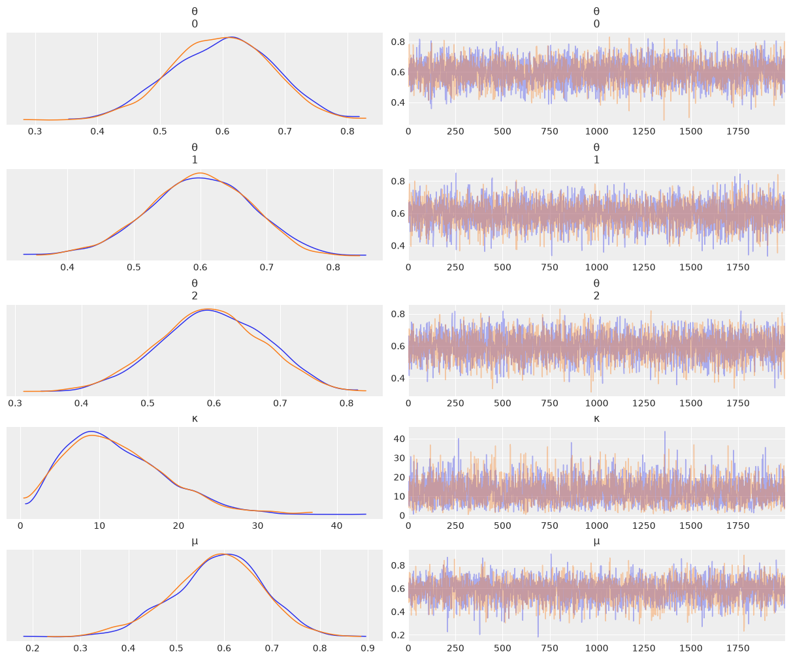
az.summary(mcmc5)
| mean | sd | hdi_3% | hdi_97% | mcse_mean | mcse_sd | ess_bulk | ess_tail | r_hat | |
|---|---|---|---|---|---|---|---|---|---|
| θ[0] | 0.599 | 0.079 | 0.446 | 0.742 | 0.001 | 0.001 | 3721.0 | 2775.0 | 1.0 |
| θ[1] | 0.598 | 0.077 | 0.459 | 0.744 | 0.001 | 0.001 | 3966.0 | 2695.0 | 1.0 |
| θ[2] | 0.596 | 0.079 | 0.454 | 0.748 | 0.001 | 0.001 | 4051.0 | 3075.0 | 1.0 |
| κ | 12.085 | 6.324 | 1.900 | 23.612 | 0.106 | 0.101 | 3186.0 | 2361.0 | 1.0 |
| μ | 0.585 | 0.095 | 0.406 | 0.759 | 0.002 | 0.002 | 3660.0 | 2296.0 | 1.0 |
prior = Predictive(mcmc5.sampler.model, num_samples=10)
prior_p = prior(random.PRNGKey(seed), obs=data)
pred = Predictive(model=mcmc5.sampler.model, posterior_samples=mcmc5.get_samples(), return_sites=['y'])
post_p = pred(random.PRNGKey(seed))
samples = az.from_numpyro(mcmc5, prior=prior_p, posterior_predictive=post_p)
az.plot_ppc(samples, mean=True, observed=True, color='C0')
FutureWarning: color has been deprecated in favor of colors
<Axes: xlabel='y'>
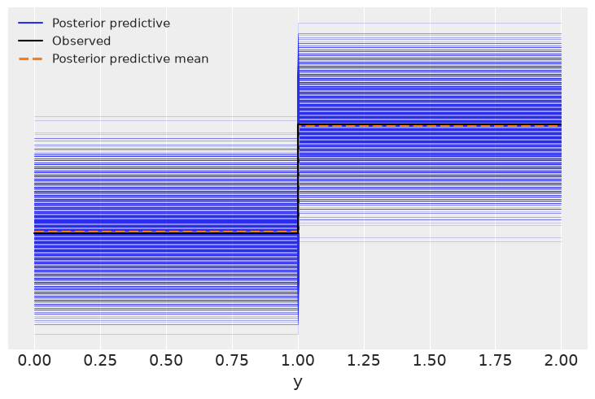
len(mcmc5.get_samples()['μ'])
4000
x = jnp.linspace(start=0, stop=1, num=100)
for i in random.randint(random.PRNGKey(1), shape=(100,), minval=0, maxval=len(mcmc5.get_samples()['μ'])):
u = mcmc5.get_samples()['μ'][i]
k = mcmc5.get_samples()['κ'][i]
pdf = jnp.exp(dist.Beta(u*k, (1.0-u)*k).log_prob(x))
plt.plot(x, pdf, 'C1', alpha=0.2)
u_mean = mcmc5.get_samples()['μ'].mean()
k_mean = mcmc5.get_samples()['κ'].mean()
distri = dist.Beta(u_mean*k_mean, (1.0-u_mean)*k_mean)
pdf = jnp.exp(distri.log_prob(x))
mode = x[jnp.argmax(pdf)]
mean = distri.mean
plt.plot(x, pdf, lw=3, label=f'mode = {mode:.2f}\nmean = {mean:.2f}')
plt.yticks([])
plt.legend()
plt.xlabel('$θ_{prior}$')
plt.tight_layout()
UserWarning: The figure layout has changed to tight
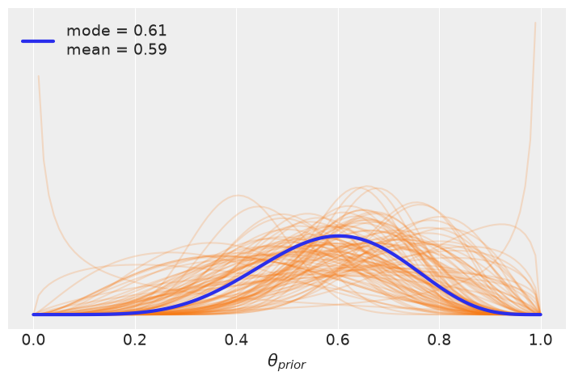
cs_data = pd.read_csv('../data/chemical_shifts_theo_exp.csv')
diff = cs_data.theo.values - cs_data.exp.values
idx = pd.Categorical(cs_data['aa']).codes
groups = len(jnp.unique(idx))
cs_data.head()
| ID | aa | theo | exp | |
|---|---|---|---|---|
| 0 | 1BM8 | ILE | 61.18 | 58.27 |
| 1 | 1BM8 | TYR | 56.95 | 56.18 |
| 2 | 1BM8 | SER | 56.35 | 56.84 |
| 3 | 1BM8 | ALA | 51.96 | 51.01 |
| 4 | 1BM8 | ARG | 56.54 | 54.64 |
def model(obs=None):
μ = numpyro.sample('μ', dist.Normal(loc=0., scale=10.), sample_shape=(groups,))
σ = numpyro.sample('σ', dist.HalfNormal(scale=10.), sample_shape=(groups,))
numpyro.sample('y', dist.Normal(loc=μ[idx], scale=σ[idx]), obs=obs, sample_shape=(len(cs_data),))
kernel = NUTS(model)
mcmc6 = MCMC(kernel, num_warmup=500, num_samples=500, num_chains=2)
mcmc6.run(random.PRNGKey(seed), obs=diff)
UserWarning: There are not enough devices to run parallel chains: expected 2 but got 1. Chains will be drawn sequentially. If you are running MCMC in CPU, consider using `numpyro.set_host_device_count(2)` at the beginning of your program. You can double-check how many devices are available in your system using `jax.local_device_count()`.
def model(obs=None):
# hyperpriors
μ_μ = numpyro.sample('μ_μ', dist.Normal(loc=0., scale=10.))
σ_μ = numpyro.sample('σ_μ', dist.HalfNormal(scale=10.))
# priors
μ = numpyro.sample('μ', dist.Normal(loc=μ_μ, scale=σ_μ), sample_shape=(groups,))
σ = numpyro.sample('σ', dist.HalfNormal(scale=10.), sample_shape=(groups,))
numpyro.sample('y', dist.Normal(loc=μ[idx], scale=σ[idx]), obs=obs, sample_shape=(len(cs_data),))
kernel = NUTS(model)
mcmc7 = MCMC(kernel, num_warmup=500, num_samples=500, num_chains=2)
mcmc7.run(random.PRNGKey(seed), obs=diff)
UserWarning: There are not enough devices to run parallel chains: expected 2 but got 1. Chains will be drawn sequentially. If you are running MCMC in CPU, consider using `numpyro.set_host_device_count(2)` at the beginning of your program. You can double-check how many devices are available in your system using `jax.local_device_count()`.
axes = az.plot_forest([mcmc6, mcmc7],
model_names=['n_h', 'h'],
var_names='μ', combined=False, colors='cycle')
y_lims = axes[0].get_ylim()
axes[0].vlines(jnp.mean(mcmc7.get_samples()['μ_μ']), color='k', *y_lims)
<matplotlib.collections.LineCollection at 0x7f7675239950>
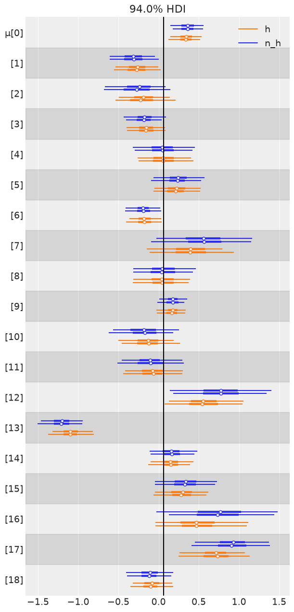